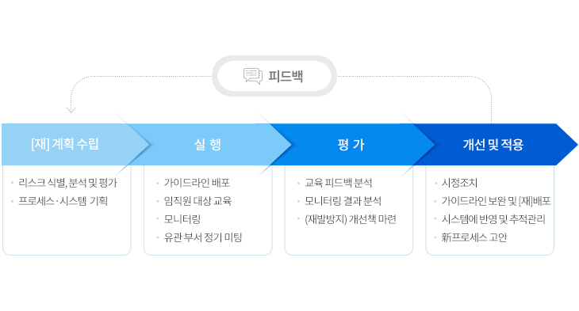
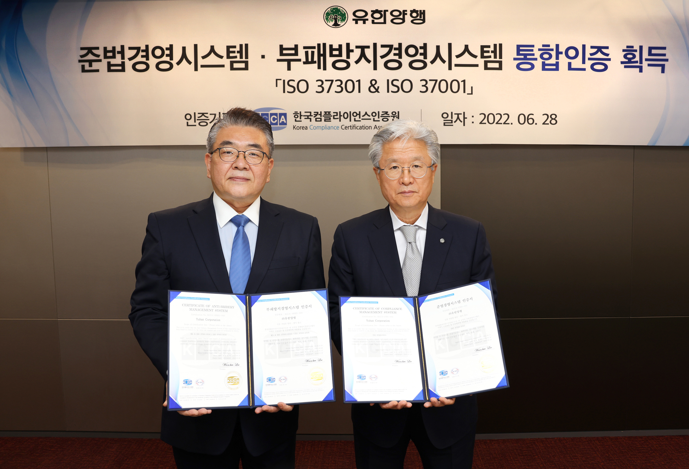

유한양행과 종속회사는 우수한 제품과 공정하고 투명한 경영을 통해 인류의 건강과 행복 증진에 기여하고 있습니다.이에, 올바른 업무 수행 및 윤리적 가치판단의 기준을 보다 명확하게 하기 위해 이 헌장을 제정하고, 이를 적극 실천할 것을 다짐합니다.
‘유한 윤리헌장’은 유한양행과 종속회사에 적용되며, 각 사는 이를 저촉하지 않는 범위 내에서 별도의 윤리규범을 제정할 수 있습니다.
우리는 창업이념을 충실히 구현하기 위하여, 진취적이고 윤리적인 기업문화를 창조하는 데 끊임없이 노력해 나갈 것을 다짐합니다. 이에 다음과 같은 윤리강령을 적극적으로 실천할 것을 결의합니다.
유한양행은 2007년 공정거래자율준수프로그램(CP)을 도입해 준법경영시스템을 구축했습니다.창업이념을 바탕으로 기업 가치를 창출하며 전 임직원은 CP를 적극 준수하여 투명하고 공정한 경영을 실천하고 있습니다.CP프로세스CP(Compliance Program)란 기업이 공정거래 관련 법규를 준수하기 위해서 자체적으로 제정·운영하는 내부준법시스템 및 행동 규범으로 아래와 같은 프로세스를 통해 운영되고 있습니다.

ISO 37001과 ISO 37301은 국제표준화기구(ISO, International Organization for Standard)가 제정한 부패방지 및 준법경영 관련 표준입니다.법률을 기반으로 부패 및 컴플라이언스 리스크를 사전에 식별하고 관리하는 체계를 제공하고 모든 조직에 적용 가능하도록 설계되어 부패 방지와 법적 의무 준수를 지원합니다.

인증유한양행은 부패방지문화 확산과 지속가능한 경영을 위해 2018년 3월 부패방지경영시스템(ISO 37001) 인증을 획득했습니다. 이어 2022년 6월 준법경영시스템(ISO 37301) 인증을 추가로 취득하며 준법경영 체계를 더욱 강화했습니다. 이를 통해 법적 의무 준수와 리스크 관리 역량을 인정받아 대내외 신뢰도를 높였습니다.